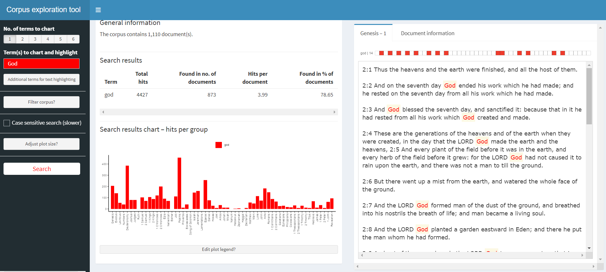
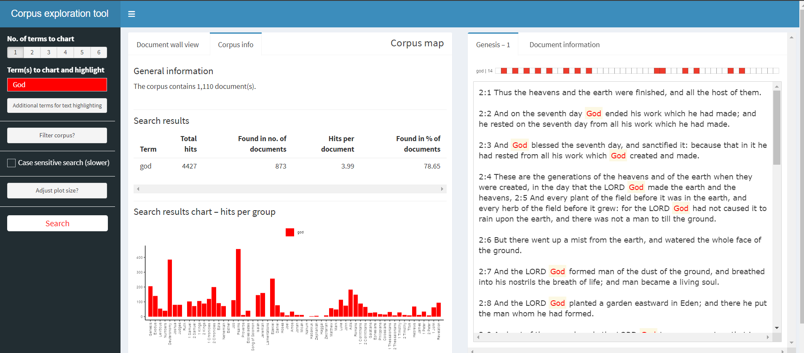
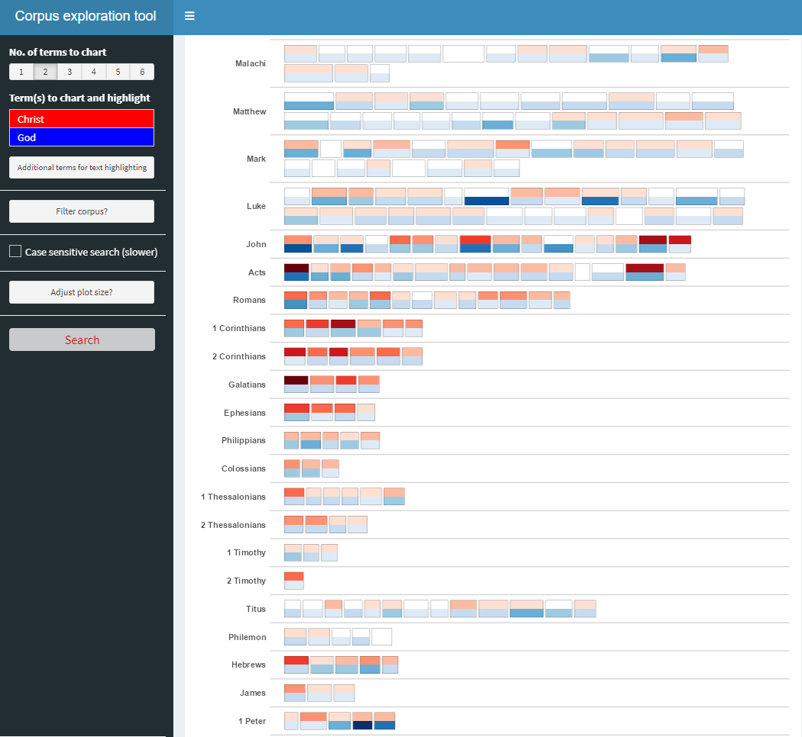
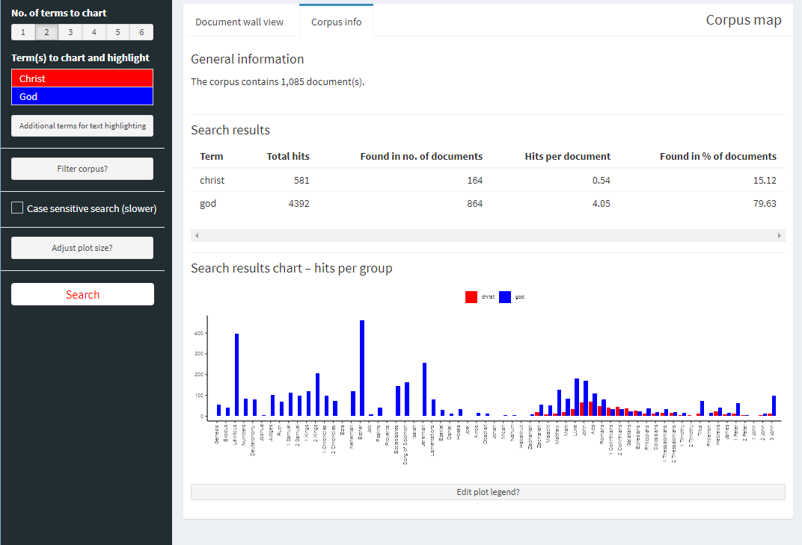

pacman::p_load(tidyverse, readtext, corporaexplorer,
quanteda, stringi, stringr, rvest, tidytext)In-class Exercise 6a
6.0 Exploring the King James Bible
corporaexplorer can be used to explore not only chronological text collections with documen date as main organising principle, but any collection of texts. The example used here is the King James Bible.
6.1 Loading the necessary R packages
6.2 Loading the data
bible <- readr::read_lines("http://www.gutenberg.org/cache/epub/10/pg10.txt")the data is a text file; a plain text from a website
6.3 To tidy up the text
6.3.1 Pre-processing the text
Collapsing into one string.
bible <- paste(bible, collapse = "\n")Identifying the beginning and end of the Bible / stripping PJ metadata
Note
technique borrowed from - (https://quanteda.io/articles/pkgdown/replication/digital-humanities.html).
start_v <- stri_locate_first_fixed(bible, "The First Book of Moses: Called Genesis")[1]
end_v <- stri_locate_last_fixed(bible, "Amen.")[2]
bible <- stri_sub(bible, start_v, end_v)In the file, every book in the bible is preceded by five newlines,
which we use to split our string into a vector where each element is a book.
books <- stri_split_regex(bible, "\n{5}") %>%
unlist %>%
.[-40] # Removing the heading "The New Testament of the King James Bible",
# which also was preceded by five newlines.Because of the structure of the text in the file:
Replacing double or more newlines with two newlines, and a single newline with space.
books <- str_replace_all(books, "\n{2,}", "NEW_PARAGRAPH") %>%
str_replace_all("\n", " ") %>%
str_replace_all("NEW_PARAGRAPH", "\n\n")
books <- books[3:68] # The two first elements are not booksIdentifying new chapters within each book and split the text into chapters.
E.g. (The first characters in chapter 2 will e.g. be 2:1)
chapters <- str_replace_all(books, "(\\d+:1 )", "NEW_CHAPTER\\1") %>%
stri_split_regex("NEW_CHAPTER")Removing the chapter headings from the text (we want them as metadata).
chapters <- lapply(chapters, function(x) x[-1])6.4 Metadta
We are not quite happy with the long book titles in the King James Bible, so we retrieve shorter versions from esv.org which will take up less space in the corpus map plot.
book_titles <- read_html("https://www.esv.org/resources/esv-global-study-bible/list-of-abbreviations") %>%
html_nodes("td:nth-child(1)") %>%
html_text() %>%
.[13:78] # Removing irrelevant elements after manual inspection.# We add a column indicating whether a book belongs to the Old or New Testament,
# knowing that they contain respectively 39 and 27 books.
testament <- c(rep("Old", 39), rep("New", 27))6.5 Creating data frame with text and metadata
# Data frame with one book as one row.
bible_df <- tibble::tibble(Text = chapters,
Book = book_titles,
Testament = testament)# We want each chapter to be one row, but keep the metadata (book and which testament).
bible_df <- tidyr::unnest(bible_df, Text)6.6 Using corporaexplorer
As this is a corpus which is not organised by date,
Note
- we set
date_based_corpustoFALSE. - Because we want to organise our exploration around the books in the Bible,
- we pass
"Book"to thegrouping_variableargument. - We specify which metadata columns we want to be displayed in the: “Document information” tab, using the
columns_doc_infoargument.
KJB <- prepare_data(dataset = bible_df,
date_based_corpus = FALSE,
grouping_variable = "Book",
columns_doc_info =
c("Testament", "Book")) #that helps group together the one that we are extracting
# a unique object class is created that R Studio can readclass(KJB) #to check that the object class is created properly since it is specially catered to corpora explorer[1] "corporaexplorerobject"From the class function it shows that the object class is a “corporaexplorerobject” to show that we are on the right track.
explore(KJB) #pull up the shiny appShiny applications not supported in static R Markdown documents
Snapshots of corpus exploration tool
   
Steps/processes for this exercise
- Preparing and then tidying up the data (working with text data instead of usual numerical data)
- Constructing the data frame
- Exploration of the data